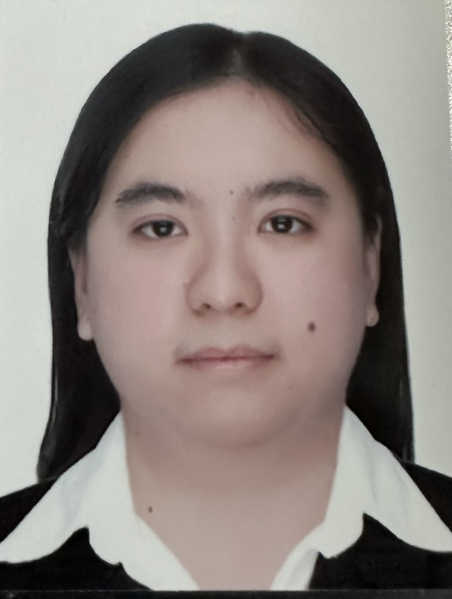

Alain Charisse Crescini
Sitecore Content Author | QA Analyst | Front End Developer
Professional Skills
-
QA (5 yrs)
- API Testing
- Manual Testing
- Accessibility Testing
- Functional Testing
- BrowserStac
-
Content Author (5yrs)
- Sitecore
- JIRA
- HubSpot
- Drupal
- WordPress
-
Development (3 months)
Work Experience:
-
Associate Software Engineer| QA Tester
Accenture Inc. | January 2018 - August 2020
- Underwent bootcamp for Sitecore and MVC Development
- Creating styling using CSS and HTML
- Collaborate with stakeholders and analyze design requirements
- Create test cases fitting acceptance criteria
- Collaborate with the developers for bugs
- Execute WCAG Testing using AA Standards
- Test Email subscription and un-subscription on webforms
-
Sitecore QA Analyst
Hedy Philippines (MRM) | September 2020 – April 2023
- Coordinate with Business Analyst and Product owner
- Collaborate with stakeholders and analyze design requirements
- Create test cases fitting acceptance criteria
- Collaborate with the developers for bugs
-
Content Management using Sitecore via Experience Editor and Content
Editor
- Create authoring guides and documentations for Client
-
Web Content Specialist
Arcadis | April 2023 - Present
- Collaborate with Marketers for creation of webpages
- Create webpages based on given templates using Sitecore
- Coordinate with Marketing team for campaign projects
Education
Bachelor of Science in Electronics Engineering
Bulacan State University (June 2012 - June 2017)
Professional Experience